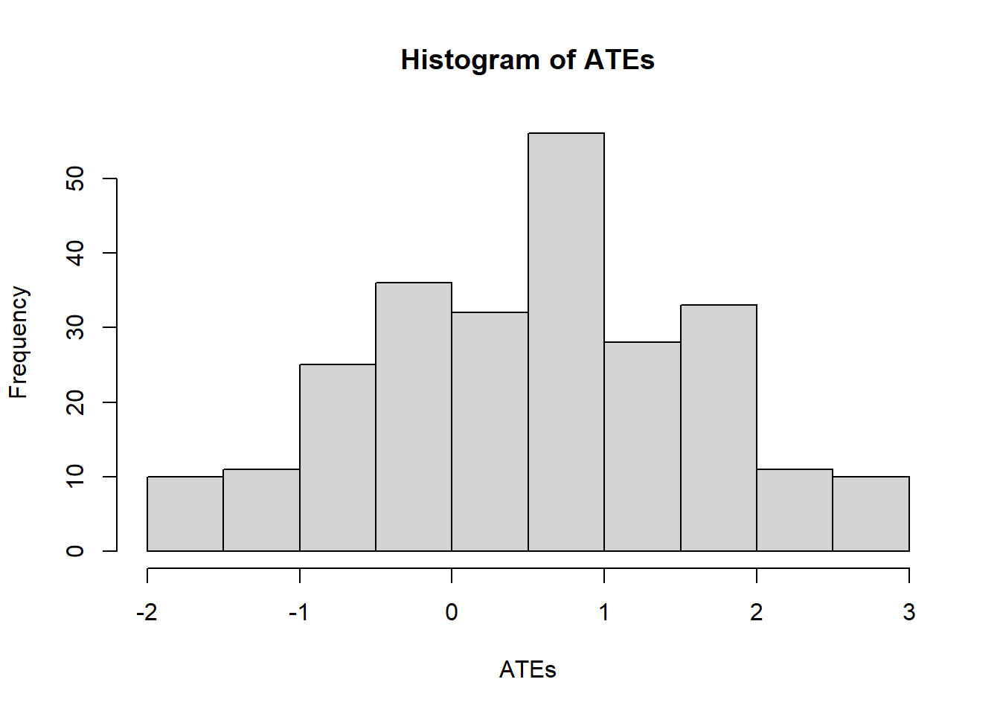
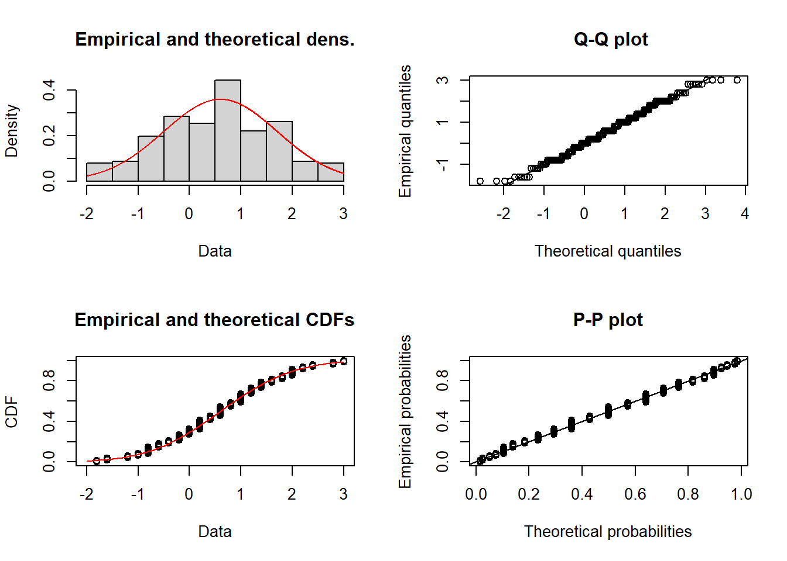
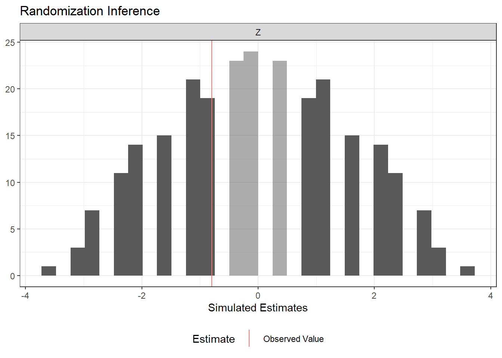
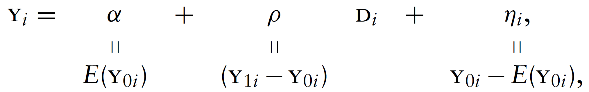

Following Hull (2022), it is useful to distinguish three objects that are related but conceptually distinct.
Parameters are features of the model we use to describe how the data are generated—for example, a structural elasticity, an average treatment effect, or a conditional expectation function. They define the target of an empirical analysis: the quantity we ultimately want to learn about.
Estimands are functionals of the population data distribution—for example, a difference in population means or a ratio of population regression coefficients. Linking a parameter to an estimand requires assumptions; this step is called identification.
Estimators are functionals of the observed sample—for example, a difference in sample means or a ratio of OLS coefficients. Because the sample is random, every estimator is a random variable with its own sampling distribution. Using knowledge of that distribution to draw conclusions about the estimand (and, through identification, the parameter) is statistical inference.
The relationship among the three can be summarised as:
\[
\underset{\text{(from theory)}}{\text{Parameters}}
\xleftarrow{\text{Identification}}
\underset{\text{(from the population)}}{\text{Estimands}}
\xleftarrow{\text{Statistical Inference}}
\underset{\text{(from the sample)}}{\text{Estimators}}
\]
Two Words on Design-Based vs Model-Based Inference (thoughts from Card’s slides and Nobel lecture; more on next meeting)
A primary goal in economic research is to draw causal inferences. What role do models play in this process?
one view (e.g., Heckman, 2008): causality is model-based: causality only exists within the framework of a theory that says ‘x causes \(y\)’
an opposing view (e.g., Holland): causality is design-based: a claim of causality requires that you can design a manipulation in which ’ \(x\) causes \(y\) ’
Notice that if (2) is the only way to causality, then astronomy is in trouble as we cannot make causal claims about the movements of planets (we cannot manipulate them).
Let’s re-formulate these points using the vocabulary we just introduced. What drives the identification of our target causal parameters? Is it (1), the careful modelling of the data generating process (DGP)? where by models we include statistical models and economic (and otherwise) models.
Or is it (2), the empirical setup of our data analysis? This setup can be an experiment, where the physical environment is controlled to allow the researcher to manipulate one variable while keeping everything else constant. It can also be a quasi-experiment, also called natural experiment, where historical circumstances happen to create a situation that can be used to approximate an experiment; a situation where the assignment to treatment is as-good-as random.
People are tribal and so we see either approach being used to the exclusion of the other. Nonetheless, it is easy to see how they are—almost by necessity—complementary. Nothing is better than assigning treatment at random to establish causality. Yet, both experimental but especially observational studies need/benefit from careful modelling. Solid statistical modelling allows to stumble at the inference stage. Careful economic modelling helps generalising a study’s result and identifying potential mechanisms at play (beyond the simple ‘x causes y’). A general point is that the more structural we impose on the data, the more we can mine the information embedded in the data. The quality of that information will then depend on the veracity of our assumptions. Nothing prevents us from making weak claims and strong claims, and let the reader judge which to trust.
2 The Experimental Ideal
2.1 The Selection Problem
Given a treatment \(D_i \in \{0,1\}\), for any individual there are two potential outcomes (e.g. body temperature after hospitalisation):
Once the experiment (either literal experiment or natural experiment) is run, for each individual (or unit) we will observe only one potential outcome, while the other one will be missing.
Causal Parameters detour
Let us introduce some frequently targeted causal parameters.
Unit-specific treatment effects
\[\delta_i = Y_{1i} - Y_{0i}\]
The fact that we only observe one makes these parameters unobservable (we can sometime estimate it, though!).
Average Treatment Effect (ATE)
\[
\begin{aligned}
A T E &=E\left[\delta_{i}\right] \\
&=E\left[Y_{1i}-Y_{0i}\right] \\
&=E\left[Y_{1i}\right]-E\left[Y_{0i}\right] \\
&=\frac{1}{N} \sum_{i=1}^{N}\left(Y_{1i}-Y_{0i}\right)
\end{aligned}
\]
Notice that you can also calculate this for a subpopulation, e.g. the treatment effect on people >50 years old, or on treated/untreated people (see below).
Average Treatment Effect of the Treated (ATT)
\[
\begin{aligned}
A T T &=E\left[\delta_{i} \mid D_{i}=1\right] \\
&=E\left[Y_{1i}-Y_{0i} \mid D_{i}=1\right] \\
&=E\left[Y_{1i} \mid D_{i}=1\right]-E\left[Y_{0i} \mid D_{i}=1\right] \\
&=\frac{1}{N_{T}} \sum_{i: D_{i}=1}\left(Y_{1i}-Y_{0i}\right)
\end{aligned}
\]
where \(N_{T}\) is the number of units exposed to the active treatment. NB: I could have used conditional notation in the last line of the equation.
Average Treatment Effect of the Untreated (ATU)
\[
\begin{aligned}
A T U &=E\left[\delta_{i} \mid D_{i}=0\right] \\
&=E\left[Y_{1i}-Y_{0i} \mid D_{i}=0\right] \\
&=E\left[Y_{1i} \mid D_{i}=0\right]-E\left[Y_{0i} \mid D_{i}=0\right] \\
&=\frac{1}{N_{C}} \sum_{i: D_{i}=0}\left(Y_{1i}-Y_{0i}\right)
\end{aligned}
\]
where \(N_{C}\) is the number of units not exposed (i.e. the control units) to the active treatment.
ATE as a convex combination of ATT and ATU
\[ ATE=\pi ATT+(1-\pi) ATU \]
where \(0<\pi<1\) is the share of treated individuals and \(1-\pi\) is the share of untreated individuals.
Question
If the participants of the program are those most likely to benefit from it, how would ATE, ATT and ATU rank, in descending order? e.g. ATE > ATU > ATT
Selection Bias
Consider the (naive) observed difference in average between people who got treated and people who did not:
\[E\left[\mathrm{Y}_{i} \mid \mathrm{D}_{i}=1\right]-E\left[\mathrm{Y}_{i} \mid \mathrm{D}_{i}=0\right]\]\[=\{E[D_{i} Y_{1i}+\left(1-D_{i}\right) Y_{0i} | D_i = 1]\} - \{E[D_{i} Y_{1i}+\left(1-D_{i}\right) Y_{0i} | D_i = 0]\}\]\[= E[Y_{1i} | D_{i}=1] - \{E[Y_{0i} | D_{i}=0]\}\]\[=E[Y_{1i} | D_{i}=1] - E[Y_{0i} | D_{i}=1] + E[Y_{0i} | D_{i}=1] - E[Y_{0i} | D_{i}=0]\] <notice how the 2nd and 3rd terms can be introduced as they sum up to 0>
Adding a couple of labels to the above equation, we get: \[\begin{aligned} \underbrace{E\left[\mathrm{Y}_{i} \mid \mathrm{D}_{i}=1\right]-E\left[\mathrm{Y}_{i} \mid \mathrm{D}_{i}=0\right]}_{\text {Observed difference in average health }}=& \underbrace{E\left[\mathrm{Y}_{1 i} \mid \mathrm{D}_{i}=1\right]-E\left[\mathrm{Y}_{0 i} \mid \mathrm{D}_{i}=1\right]}_{\text {Average treatment effect on the treated, ATT }} \\ &+\underbrace{E\left[\mathrm{Y}_{0 i} \mid \mathrm{D}_{i}=1\right]-E\left[\mathrm{Y}_{0 i} \mid \mathrm{D}_{i}=0\right]}_{\text {Selection bias }} . \end{aligned}\]If people coming to the emergency room are on average much much sicker than those who don’t, even if their treatment is helpful the selection bias will lead to negative naive observed difference.
This result, however, does not hold in presence of heterogeneous treatment effects, as shown in Cunningham (2021). In addition to this, Słoczynski (2022) shows that the estimand \(\tau\) in regression equation \(y=\alpha+\tau d+X \beta+u\) estimates a convex combination of ATT and ATU which is equal to the ATE only if the treated and untreated groups have the same size (the same number of members).
Decomposition of Observed Difference Difference in Means with Heterogeneous T.E.s (Cunningham, 2021)
\[
\begin{aligned}
A T E &=\pi A T T+(1-\pi) A T U \\
&=\pi E\left[Y_{1} \mid D=1\right]-\pi E\left[Y_{0} \mid D=1\right] \\
&+(1-\pi) E\left[Y_{1} \mid D=0\right]-(1-\pi) E\left[Y_{0} \mid D=0\right] \\
&=\left\{\pi E\left[Y_{1} \mid D=1\right]+(1-\pi) E\left[Y_{1} \mid D=0\right]\right\} \\
&-\left\{\pi E\left[Y_{0} \mid D=1\right]+(1-\pi) E\left[Y_{0} \mid D=0\right]\right\}
\end{aligned}
\]
To make the proof slimmer, define: \[
\begin{aligned}
E\left[Y_{1} \mid D=1\right] &=a \\
E\left[Y_{1} \mid D=0\right] &=b \\
E\left[Y_{0} \mid D=1\right] &=c \\
E\left[Y_{0} \mid D=0\right] &=d \\
A T E &=e
\end{aligned}
\]
Replacing the equation terms with the letters, we get: \[
\begin{aligned}
e &=\{\pi a+(1-\pi) b\}-\{\pi c+(1-\pi) d\} \\
e &=\pi a+b-\pi b-\pi c-d+\pi d \\
e &=\pi a+b-\pi b-\pi c-d+\pi d+(\mathbf{a}-\mathbf{a})+(\mathbf{c}-\mathbf{c})+(\mathbf{d}-\mathbf{d}) \\
0 &=e-\pi a-b+\pi b+\pi c+d-\pi d-\mathbf{a}+\mathbf{a}-\mathbf{c}+\mathbf{c}-\mathbf{d}+\mathbf{d} \\
\mathbf{a}-\mathbf{d} &=e-\pi a-b+\pi b+\pi c+d-\pi d+\mathbf{a}-\mathbf{c}+\mathbf{c}-\mathbf{d} \\
\mathbf{a}-\mathbf{d} &=e+(\mathbf{c}-\mathbf{d})+\mathbf{a}-\pi a-b+\pi b-\mathbf{c}+\pi c+d-\pi d \\
\mathbf{a}-\mathbf{d} &=e+(\mathbf{c}-\mathbf{d})+(1-\pi) a-(1-\pi) b+(1-\pi) d-(1-\pi) c \\
\mathbf{a}-\mathbf{d} &=e+(\mathbf{c}-\mathbf{d})+(1-\pi)(a-c)-(1-\pi)(b-d)
\end{aligned}
\]
Now, substituting our definitions, we get the following: \[
\begin{aligned}
E\left[Y_{1} \mid D=1\right]-E\left[Y_{0} \mid D=0\right] &=A T E \\
&+\left(E\left[Y_{0} \mid D=1\right]-E\left[Y_{0} \mid D=0\right]\right) \\
&+(1-\pi)(A T T-A T U)
\end{aligned}
\]
Wrapping up, this is what we got: \[
\begin{aligned}
\underbrace{\frac{1}{N_{T}} \sum_{i=1}^{n}\left(y_{i} \mid d_{i}=1\right)-\frac{1}{N_{C}} \sum_{i=1}^{n}\left(y_{i} \mid d_{i}=0\right)}_{\text {Simple Difference in Outcomes }}&=\underbrace{E\left[Y_{1}\right]-E\left[Y_{0}\right]}_{\text {Average Treatment Effect }}\\
&+\underbrace{E\left[Y_{0} \mid D=1\right]-E\left[Y_{0} \mid D=0\right]}_{\text {Selection bias }}\\
&+\underbrace{(1-\pi)(A T T-A T U)}_{\text {Heterogeneous treatment effect bias }}
\end{aligned}
\]
A Final Note on Heterogeneity
One last thing before we move on. Let’s define one last (for the moment) causal parameter, the Conditional Average Treatment Effects (CATE):
When we estimate treatment effects using regression models that include covariates, we estimate the CATE. Notice that if the effects are homogeneous across individuals, the CATE will be identical to the ATE.
Moreover, in presence of strong heterogeneity, the CATE will lead to more precise estimates (due to the use of covariates) than the ATE.
Nonetheless, because today we are focusing on experiments with random sampling, we should not worry about this.
Modern CATE Estimation and Evaluation
Recent work has developed principled ways to estimate and evaluate CATEs. The grf R package (Generalized Random Forests; Athey, Tibshirani & Wager, 2019) provides forest-based CATE estimation via causal_forest(). Once CATEs are estimated, the question becomes how to evaluate whether the estimated heterogeneity is real and useful. Yadlowsky et al. (2025) propose the Rank-Weighted Average Treatment Effect (RATE), a metric that assesses how well an estimated CATE function prioritises individuals who benefit most from treatment. The grf package implements RATE via the rank_average_treatment_effect() function, making it straightforward to test whether detected heterogeneity is meaningful.
2.3 A Word on Samples and Populations (Imbens & Wooldridge, 2009 JEL; Gelman, Hill & Vehtari, 2020)
In applied work, we have enough troubles producing credible estimates using the samples at hand that we do not talk much about how our estimates generalise to our population of interest, nor about what our population of interest actually is!
Then there are people like Gelman (guru on the exotic topic of post-stratification), Wooldridge and Imbens that care to highlight that unless our sample is random, as in experiments, population ATE (PATE) and sample ATE (SATE) will differ. To bridge the gap we would need post-stratification techniques, which are aimed at correctly extrapolating/generalising our sample results. I am ignorant on this topic and we might cover it in the future.
2.4 Random Assignment Solves the Selection Problem (Chernozhukov, 2017; Imbens & Rubin, 2015)
\(A {\perp\kern-5pt\perp} B | C\) denotes that A is independent of B given C, or, equivalently, that p(a | b, c) does not depend on the value b of B (for given a,c). Note that this makes sense even if B is a parameter variable rather than a random variable. We can handle such “extended conditional independence” (ECI) properties using exactly the same algebraic rules as for regular probabilistic conditional independence (CI). And, if desired, we can use graphical representations (which explicitly include parameter variables along with random variables) to represent and manipulate ECI properties, exactly as for CI.
Random Assignment
As we saw above with the emergency room example, we could say that in an observational setting assignment to treatment (or treatment assignment mechanism) is a function of the potential outcomes, \(D_i(Y_{0i}, Y_{1i})\). In our example, people who are—absent treatment—sicker, are more likely to go to the emergency room than those who are—absent treatment—healthier, i.e. \(E [Y_{0i} | D_i = 1] > E [Y_{0i} | D_i = 0]\), where \(Y\) is a variable measuring how sick one is. This is only one of the possible ways in which treatment assignment can depend on potential outcomes.
Imbens & Rubin’s take
Luckily, random assignment implies that assignment is independent of the potential outcomes, i.e. \[
\operatorname{Pr}\left(D_{i}=1 \mid Y_{0i}, Y_{1i}\right)=\operatorname{Pr}\left(D_{i}=1\right)
\] or in Dawid’s (1979) ” \({\perp\kern-5pt\perp}\) ” independence notation, \[
D_{i} {\perp\kern-5pt\perp} \left(Y_{0i}, Y_{1i}\right) .
\]
This assumption has several names: ignorability, exogeneity, independence, unconfoundedness. Add the word “conditional” before the above terms and you get a more general version of this assumption, which conditions on covariates other than the treatment variable: \[
D_{i} {\perp\kern-5pt\perp} \left(Y_{0i}, Y_{1i}\right) | X_i.
\]
Angrist & Pischke’s take
Random assignment of \(\mathrm{D}_{i}\) solves the selection problem because random assignment makes \(\mathrm{D}_{i}\) independent of potential outcomes. To see this, note that
\[
\begin{aligned}
E\left[\mathrm{Y}_{i} \mid \mathrm{D}_{i}=1\right]-E\left[\mathrm{Y}_{i} \mid \mathrm{D}_{i}=0\right] &=\underbrace{E\left[\mathrm{Y}_{1 i} \mid \mathrm{D}_{i}=1\right]}_{\text{i's obs'd treated if were treated}}-\underbrace{E\left[\mathrm{Y}_{0 i} \mid \mathrm{D}_{i}=0\right]}_{\text{i's obs'd untreated if were untreated}} \\
&=\underbrace{E\left[\mathrm{Y}_{1 i} \mid \mathrm{D}_{i}=1\right]}_{\text{i's obs'd treated if were treated}} - \underbrace{E\left[\mathrm{Y}_{0 i} \mid \mathrm{D}_{i}=1\right]}_{\text{i's obs'd treated if were untreated}} = ATT \\
&=E\left[\mathrm{Y}_{1 i}-\mathrm{Y}_{0 i}\right] = ATE.
\end{aligned}
\] where the independence of \(\mathrm{Y}_{0 i}\) and \(\mathrm{D}_{i}\) allows us to swap \(E\left[\mathrm{Y}_{0 i} \mid \mathrm{D}_{i}=1\right]\) for \(E\left[\mathrm{Y}_{0 i} \mid \mathrm{D}_{i}=0\right]\) in the second line and to get to the third line too. Notice that, assuming homogeneous effects, we could have gone via the ATU too, but it would have been less intuitive.
The effect of randomly assigned hospitalization on the hospitalized (ATT) is the same as the effect of hospitalization on a randomly chosen patient (ATE). The main thing, however, is that random assignment of \(\mathrm{D}_{i}\) eliminates selection bias, leaving us with just the ATE.
Chernozhukov’s take (more general)
Assumption 1 (Random Assignment/Exogeneity). Suppose that the treatment status is randomly assigned, namely \(D\) is statistically independent of the potential outcomes \(\left(Y_{d,i}\right)_{d \in\{0,1\}}\), which is denoted as
Please note that the theorem is self-contained, since the proof is contained in the statement.
The Power of Random Assignment
For didactic purposes, assume you have God-like powers and can see both counterfactuals at the same time. Now find all possible permutations of the assignment vector (make it length = 10, of which 5 treated and 5 controls). If you then calculate all the possible differences between the treated and untreated, you can see that their mean value is equal to the true ATE.
At a basic level, this simulation reminds us that any estimator is a random variable and that even with God-like powers it returns the true value only on average. The interesting thing here is that the uncertainty is not generated by sampling (sampling error), but by the randomisation process.
To check where my claims are true, we can calculate the true ATE and compare with the naive differences.
Fun fact: The number of distinct values of the assignment vector with \(N_{\mathrm{t}}\) units out of \(N\) assigned to the active treatment is
which, in our case where \(N = 10\) and \(N_t = 5\), implies that we have 252 possible permutations of the assignment vector.
Code
# install.packages("fitdistrplus")library(fitdistrplus) #fit distributions to data# Potential Outcomesy1 <-c(7,5,5,7,4,10,1,5,3,9)y0 <-c(1,6,1,8,2,1,10,6,7,8)# The only variable is the treatment, so we need to find all possible # realizations of the treatment variable. The idea is to create all # possible combinations of a dummy variable of length=10, and select # the combinations with 5 ones and 5 zeroes (equal treatment and control group).alld <-expand.grid(rep(list(0:1), 10)) # all combinations of 10 dummy variableind5 <-which(rowMeans(alld) ==0.5) # the combinations with 5 "1"alld5 <- alld[ind5, ] # 252 selected combinations# For each selected combination, calculated the ATE using the Neyman estimatorATEs <-apply(alld5, 1, function(d) mean(d * y1 /0.5- (1- d) * y0 /0.5))hist(ATEs)

Code
# Fit a normal distribution to the 252 ATEsfitnorm <- fitdistrplus::fitdist(ATEs, "norm")plot(fitnorm)

Code
# Calculate and print the true ATEtrue_ate =mean(y1) -mean(y0)print(paste("The true (unobservable) ATE is:", mean(true_ate)))
[1] "The true (unobservable) ATE is: 0.6"
Code
# Print the estimated ATEprint(paste("The estimated ATE is:", mean(ATEs)))
[1] "The estimated ATE is: 0.6"
The modern way to compute the Neyman difference-in-means estimator (with appropriate standard errors) is via the estimatr package, which provides design-based inference out of the box:
Code
# install.packages("estimatr")library(estimatr)# Using the same potential outcomes as abovey1 <-c(7,5,5,7,4,10,1,5,3,9)y0 <-c(1,6,1,8,2,1,10,6,7,8)# Pick one realisation of the treatment assignmentset.seed(42)d_i <-sample(c(rep(1, 5), rep(0, 5)))# Observed outcomes via the switching equationy_i <- d_i * y1 + (1- d_i) * y0# Compute the difference in means with design-based SEsdim_result <- estimatr::difference_in_means(y_i ~ d_i)summary(dim_result)
$coefficients
Estimate Std. Error t value Pr(>|t|) CI Lower CI Upper DF
d_i 0.6 1.886796 0.3179994 0.7592061 -3.806653 5.006653 7.457691
$design
[1] "Standard"
Stable Unit of Treatment Assumption (SUTVA) (Imbens and Rubin, 2015)
The SUTVA establishes that the potential outcomes of unit \(i\) only depend on the treatment status of that unit and that there are no treatment levels that have not been taken into account. In the words of Imbens and Rubin,
Definition 2.1 (SUTVA) The potential outcomes for any unit do not vary with the treatments assigned to other units, and, for each unit, there are no different forms or versions of each treatment level, which lead to different potential outcomes.
Hence, (i) for any given units, its potential outcomes are not affected by the treatment status of other units (no spillovers, no general equilibrium effects), and (ii), for instance, in a study on the efficacy of aspirin against headaches using a binary treatment variable, there are not more and less effective aspirin tablets. This would generate more treatment levels (and corresponding potential outcomes) that we would be accounting for using a binary variable.
Randomization Inference When SUTVA Fails
SUTVA is a strong assumption, and in many settings—such as classrooms, networks, or markets—interference (spillovers) between units is plausible. Basse et al. (2024) show that Fisher-style randomization tests can be extended to settings where SUTVA is violated by allowing potential outcomes to depend on the full treatment assignment vector, not just a unit’s own treatment. This means that even in the presence of peer effects or interference, exact p-values remain valid if the sharp null hypothesis is reformulated appropriately and the test statistic accounts for the dependence structure.
Unbiasedness of the Neyman Estimator (Imbens & Rubin, 2015)
Given it’s a randomised experiment, \[
Pr(D_i = 1| Y_{0i}, Y_{1i}) = E[D_i | Y_{0i}, Y_{1i}] = \frac{N_t}{N}
\]
Now, noting that \(D_i\) is the only stochastic element of \(\hat{\tau}^{\text{dif}}\), we finish the proof, showing it is an unbiased estimator of the ATE: \[
\begin{aligned}
E[\hat{\tau}^{\text{dif}} | Y_{0i}, Y_{1i}] &= \frac{1}{N}\sum_{i=1}^{N} \left( \frac{E[D_i] Y_{1i}}{\frac{N_t}{N}} - \frac{E[1-D_i] Y_{0i}}{\frac{N_c}{N}} \right) \\
\\
E[\hat{\tau}^{\text{dif}} | Y_{0i}, Y_{1i}] &= \frac{1}{N}\sum_{i=1}^{N} \left( \frac{\frac{N_t}{N} Y_{1i}}{\frac{N_t}{N}} - \frac{\frac{N_c}{N} Y_{0i}}{\frac{N_c}{N}} \right) \hspace{1cm} \text{, plugging in expected values of the dummies}\\
\\
&=\frac{1}{N}\sum_{i=1}^{N} (Y_{1i} - Y_{0i}) \hspace{1cm} \text{, cancelling out the proportions}\\
\end{aligned}
\] Which is our target estimand, ATE, thus ending the proof.
Exact p-values: great for RCTs and population-based studies
Exact p-values allow us to test the sharp null hypothesis leveraging randomisation uncertainty. This makes them a valid alternative to the more familiar type of p-values in experimental and population-wide settings—as in the latter there is no sampling uncertainty.
We note with Imbens and Rubin (2005):
Fisher’s null hypothesis of no effect of the treatment versus control whatsoever is distinct from the possibly more practical question of whether the typical (e.g., average) treatment effect across all units is zero. The latter is a weaker hypothesis, because the average treatment effect may be zero even when for some units the treatment effect is positive, as long as for some others the effect is negative.
To compute an exact p-value we need (i) a hypothesis and (ii) a test statistic.
As anticipated, we choose the sharp null hypothesis, which is defined as:
\[
H_{0}: \quad Y_{0i}=Y_{1i} \quad \forall i=1, \ldots, N
\]
The test statistic we choose is the Neyman estimator
It answers the question: what is the probability, over the distribution of the statistic \(\hat{\tau}^{\text{dif}}\) (induced by randomisation) that \(\hat{\tau}^{\text{dif}}\) is greater than the actually observed \(\hat{\tau}^{\text{dif}}\), in absolute value?
In other words,
An observed value that is “very unlikely,” given the null hypothesis and the induced distribution for the test statistic, will be taken as evidence against the null hypothesis in what is, essentially, a stochastic version of the mathematician’s “proof by contradiction.” How unusual the observed value is under the null hypothesis will be measured by the probability that a value as extreme or more extreme (in practice, as large or larger) would have been observed - the significance level or p-value. Hence, the FEP approach
A little note on the simulation below: by calculating the same statistics for different permutations of \(D_i\), we are implicitly imputing \(Y_{i}=Y_{1i}\) when the \(D_i=0\) and \(Y_{i}=Y_{0i}\) when the \(D_i=1\). Convince yourself of this. We are, in other words, creating a hypothetical distribution of the statistic consistent with the sharp null of no effects for anyone and then checking whether our observed statistic falls into one of the two tails.
Code
# install.packages("perm")library(perm)# Potential Outcomesy1 <-c(7,5,5,7,4,10,1,5,3,9)y0 <-c(1,6,1,8,2,1,10,6,7,8)# Actual treatment variabled_i <-c(1,1,1,1,1,0,0,0,0,0)# Define observed outcomes using the switching equationy_i <- d_i * y1 + (1- d_i) * y0print(y_i)
[1] 7 5 5 7 4 1 10 6 7 8
Code
# Put into a new datasetdataset <-data.frame(d_i, y_i)# Create (and transpose) matrix of all permutations of the treatment assignment vector (8 units of which 4 treated)d_perms <-t(chooseMatrix(10,5))#or using the "ri" package#d_perms <- genperms(d_i,blockvar=NULL, clustvar=NULL)# Merge permutations into datasetdataset1 <-data.frame(d_perms, dataset)# Actual treatment effecttau_hat <-mean(dataset1[dataset1$d_i==1,"y_i"]) -mean(dataset1[dataset1$d_i==0,"y_i"])print(tau_hat)
[1] -0.8
Code
# Create empty list to store all the possible treatment effectsdiff_list <-vector(mode='list', length=252)# Calculate all possible treatment effects and store them in the listfor (i in1:252) { diff_list[i] <-abs(mean(dataset1[dataset1[[i]]==1,"y_i"]) -mean(dataset1[dataset1[[i]]==0,"y_i"]) )}# Turn the list into a vectordiff_vec <-c(diff_list)#print(diff_vec)# Indicator variable equal to 1 if the absolute diff of a fake effect is higher # than the real observed effectp_val<-ifelse(diff_vec>=abs(tau_hat), 1, 0)# The mean of the binary variable p_val gives us the proportion of differences# that were higher than the observed one, i.e. the probability,print(mean(p_val))
[1] 0.7222222
The ri2 package provides a modern, concise interface for conducting the same randomization inference procedure. It automates the permutation of the assignment vector and the computation of exact p-values:
Code
# install.packages("ri2")library(ri2)# Using the same data as abovey1 <-c(7,5,5,7,4,10,1,5,3,9)y0 <-c(1,6,1,8,2,1,10,6,7,8)d_i <-c(1,1,1,1,1,0,0,0,0,0)y_i <- d_i * y1 + (1- d_i) * y0dat <-data.frame(Y = y_i, Z = d_i)# Declare the randomization procedure: complete random assignment of 5 out of 10declaration <- randomizr::declare_ra(N =10, m =5)# Conduct randomization inference using ri2ri_out <- ri2::conduct_ri(formula = Y ~ Z,declaration = declaration,sharp_hypothesis =0,data = dat)summary(ri_out)
term estimate two_tailed_p_value
1 Z -0.8 0.7222222
Code
plot(ri_out)

2.5 Regression Analysis of Experiments
There isn’t much to add to these last two pages of MHE Ch.2. Let’s just go through them (it’s a copy-paste).
Suppose (for now) that the treatment effect is the same for everyone, say \(\mathrm{Y}_{1 i}-\mathrm{Y}_{0 i}=\rho\), a constant. With constant treatment effects, we can rewrite \(\mathrm{Y_i} = \mathrm{Y}_{0 i}+\left(\mathrm{Y}_{1 i}-\mathrm{Y}_{0 i}\right) \mathrm{D}_{i}\) in the form

where \(\eta_{i}\) is the random part of \(\mathrm{Y}_{0 i}\).
Evaluating the conditional expectation of this equation with treatment status switched off and on gives \[
\begin{aligned}
&E\left[\mathrm{Y}_{i} \mid \mathrm{D}_{i}=1\right]=\alpha+\rho+E\left[\eta_{i} \mid \mathrm{D}_{i}=1\right] \\
&E\left[\mathrm{Y}_{i} \mid \mathrm{D}_{i}=0\right]=\alpha+E\left[\eta_{i} \mid \mathrm{D}_{i}=0\right]
\end{aligned}
\] so that \[
\begin{aligned}
&E\left[\mathrm{Y}_{i} \mid \mathrm{D}_{i}=1\right]-E\left[\mathrm{Y}_{i} \mid \mathrm{D}_{i}=0\right]=\underbrace{\rho}_{\text {Treatment effect }}+\underbrace{E\left[\eta_{i} \mid \mathrm{D}_{i}=1\right]-E\left[\eta_{i} \mid \mathrm{D}_{i}=0\right]}_{\text {Selection bias }} .
\end{aligned}
\] selection bias which is zero under (successful) randomisation.
Thus, selection bias amounts to correlation between the regression error term, \(\eta_{i}\), and the regressor, \(\mathrm{D}_{i}\). Since \[
E\left[\eta_{i} \mid \mathrm{D}_{i}=1\right]-E\left[\eta_{i} \mid \mathrm{D}_{i}=0\right]=E\left[\mathrm{Y}_{0 i} \mid \mathrm{D}_{i}=1\right]-E\left[\mathrm{Y}_{0 i} \mid \mathrm{D}_{i}=0\right]
\] this correlation reflects the difference in (no-treatment) potential outcomes between those who get treated and those who don’t.
Further Reading
Textbooks. Two excellent recent textbooks provide comprehensive treatments of the topics in this chapter. Ding (2024), A First Course in Causal Inference, offers a modern, rigorous introduction to the potential outcomes framework, randomization inference, and regression adjustment in experiments. Wager (2024), Causal Inference: A Statistical Learning Approach, complements this with a machine-learning-informed perspective on treatment effect estimation.
Design-based inference. The design-based (randomization-based) framework presented here—where uncertainty derives from treatment assignment rather than sampling—has been extended to observational settings by Rambachan & Roth (2025), “Design-Based Uncertainty for Quasi-Experiments,” who show how to construct valid confidence intervals under design-based assumptions even in difference-in-differences and regression discontinuity designs.
R packages. The estimatr package provides fast, design-based estimators with robust standard errors. The randomizr and ri2 packages streamline the declaration of randomization schemes and the computation of exact p-values, respectively. The hettreatreg package implements diagnostics for heterogeneous treatment effect bias in OLS (related to the Cunningham 2021 decomposition above). The grf package provides forest-based CATE estimation and evaluation tools.
Hull, Peter. 2022. “Econometrics Lecture Notes.”
Source Code
# A Preamble**Where Estimation Meets Identification**Following @hull_notes, it is useful to distinguish three objects that are related but conceptually distinct.- **Parameters** are features of the model we use to describe how the data are generated---for example, a structural elasticity, an average treatment effect, or a conditional expectation function. They define the *target* of an empirical analysis: the quantity we ultimately want to learn about.- **Estimands** are functionals of the population data distribution---for example, a difference in population means or a ratio of population regression coefficients. Linking a parameter to an estimand requires assumptions; this step is called *identification*.- **Estimators** are functionals of the observed sample---for example, a difference in sample means or a ratio of OLS coefficients. Because the sample is random, every estimator is a random variable with its own sampling distribution. Using knowledge of that distribution to draw conclusions about the estimand (and, through identification, the parameter) is *statistical inference*.The relationship among the three can be summarised as:$$\underset{\text{(from theory)}}{\text{Parameters}}\xleftarrow{\text{Identification}}\underset{\text{(from the population)}}{\text{Estimands}}\xleftarrow{\text{Statistical Inference}}\underset{\text{(from the sample)}}{\text{Estimators}}$$**Two Words on Design-Based vs Model-Based Inference (thoughts from Card's slides and Nobel lecture; more on next meeting)**A primary goal in economic research is to draw causal inferences. What role do models play in this process?1. one view (e.g., Heckman, 2008): causality is **model-based**: causality only exists within the framework of a theory that says 'x causes $y$ '2. an opposing view (e.g., Holland): causality is **design-based**: a claim of causality requires that you can design a manipulation in which ' $x$ causes $y$ 'Notice that if (2) is the only way to causality, then astronomy is in trouble as we cannot make causal claims about the movements of planets (we cannot manipulate them).Let's re-formulate these points using the vocabulary we just introduced. What drives the identification of our target causal parameters? Is it (1), the careful modelling of the data generating process (DGP)? where by models we include statistical models and economic (and otherwise) models.Or is it (2), the empirical setup of our data analysis? This setup can be an experiment, where the physical environment is controlled to allow the researcher to manipulate one variable while *keeping everything else constant*. It can also be a quasi-experiment, also called natural experiment, where historical circumstances happen to create a situation that can be used to approximate an experiment; a situation where the assignment to treatment is as-good-as random.People are tribal and so we see either approach being used to the exclusion of the other. Nonetheless, it is easy to see how they are---almost by necessity---complementary. Nothing is better than assigning treatment at random to establish causality. Yet, both experimental but especially observational studies need/benefit from careful modelling. Solid statistical modelling allows to stumble at the inference stage. Careful economic modelling helps generalising a study's result and identifying potential mechanisms at play (beyond the simple 'x causes y'). A general point is that the more structural we impose on the data, the more we can mine the information embedded in the data. The quality of that information will then depend on the veracity of our assumptions. Nothing prevents us from making weak claims *and* strong claims, and let the reader judge which to trust.# The Experimental Ideal## The Selection ProblemGiven a treatment $D_i \in \{0,1\}$, for any individual there are two potential outcomes (e.g. body temperature after hospitalisation):$$\text { Potential outcome }=\left\{\begin{array}{ll} \mathrm{Y}_{1 i} & \text { if } \mathrm{D}_{i}=1 \\ \mathrm{Y}_{0 i} & \text { if } \mathrm{D}_{i}=0 \end{array} .\right.$$The observed outcome, $\mathrm{Y}_{i}$, can be written in terms of potential outcomes as$$\mathrm{Y}_{i}= \begin{cases}\mathrm{Y}_{1 i} & \text { if } \mathrm{D}_{i}=1 \\ \mathrm{Y}_{0 i} & \text { if } \mathrm{D}_{i}=0\end{cases}$$which can be also written as determined according to the switching equation$$Y_{i}=D_{i} Y_{1i}+\left(1-D_{i}\right) Y_{0i}$$Once the experiment (either literal experiment or natural experiment) is run, for each individual (or unit) we will observe only one potential outcome, while the other one will be *missing*. ----#### Causal Parameters detour {-}Let us introduce some frequently targeted causal parameters.#### Unit-specific treatment effects {-}$$\delta_i = Y_{1i} - Y_{0i}$$The fact that we only observe one makes these parameters unobservable (we can sometime estimate it, though!).#### Average Treatment Effect (ATE) {-}$$\begin{aligned}A T E &=E\left[\delta_{i}\right]\\&=E\left[Y_{1i}-Y_{0i}\right]\\&=E\left[Y_{1i}\right]-E\left[Y_{0i}\right]\\&=\frac{1}{N} \sum_{i=1}^{N}\left(Y_{1i}-Y_{0i}\right)\end{aligned}$$Notice that you can also calculate this for a subpopulation, e.g. the treatment effect on people >50 years old, or on treated/untreated people (see below).#### Average Treatment Effect of the Treated (ATT) {-}$$\begin{aligned}A T T &=E\left[\delta_{i} \mid D_{i}=1\right]\\&=E\left[Y_{1i}-Y_{0i} \mid D_{i}=1\right]\\&=E\left[Y_{1i} \mid D_{i}=1\right]-E\left[Y_{0i} \mid D_{i}=1\right]\\&=\frac{1}{N_{T}} \sum_{i: D_{i}=1}\left(Y_{1i}-Y_{0i}\right)\end{aligned}$$where $N_{T}$ is the number of units exposed to the active treatment. NB: I could have used conditional notation in the last line of the equation.#### Average Treatment Effect of the Untreated (ATU) {-}$$\begin{aligned}A T U &=E\left[\delta_{i} \mid D_{i}=0\right]\\&=E\left[Y_{1i}-Y_{0i} \mid D_{i}=0\right]\\&=E\left[Y_{1i} \mid D_{i}=0\right]-E\left[Y_{0i} \mid D_{i}=0\right]\\&=\frac{1}{N_{C}} \sum_{i: D_{i}=0}\left(Y_{1i}-Y_{0i}\right)\end{aligned}$$where $N_{C}$ is the number of units not exposed (i.e. the *control* units) to the active treatment.#### ATE as a convex combination of ATT and ATU {-}$$ ATE=\pi ATT+(1-\pi) ATU $$where $0<\pi<1$ is the share of treated individuals and $1-\pi$ is the share of untreated individuals. #### *Question* {-}If the participants of the program are those most likely to benefit from it, how would ATE, ATT and ATU rank, in descending order? e.g. ATE > ATU > ATT----#### Selection Bias {-}Consider the (naive) observed difference in average between people who got treated and people who did not:$$E\left[\mathrm{Y}_{i} \mid \mathrm{D}_{i}=1\right]-E\left[\mathrm{Y}_{i} \mid \mathrm{D}_{i}=0\right]$$$$=\{E[D_{i} Y_{1i}+\left(1-D_{i}\right) Y_{0i} | D_i = 1]\} - \{E[D_{i} Y_{1i}+\left(1-D_{i}\right) Y_{0i} | D_i = 0]\}$$$$= E[Y_{1i} | D_{i}=1] - \{E[Y_{0i} | D_{i}=0]\}$$$$=E[Y_{1i} | D_{i}=1] - E[Y_{0i} | D_{i}=1] + E[Y_{0i} | D_{i}=1] - E[Y_{0i} | D_{i}=0]$$<notice how the 2nd and 3rd terms can be introduced as they sum up to 0>Adding a couple of labels to the above equation, we get:$$\begin{aligned} \underbrace{E\left[\mathrm{Y}_{i} \mid \mathrm{D}_{i}=1\right]-E\left[\mathrm{Y}_{i} \mid \mathrm{D}_{i}=0\right]}_{\text {Observed difference in average health }}=& \underbrace{E\left[\mathrm{Y}_{1 i} \mid \mathrm{D}_{i}=1\right]-E\left[\mathrm{Y}_{0 i} \mid \mathrm{D}_{i}=1\right]}_{\text {Average treatment effect on the treated, ATT }} \\ &+\underbrace{E\left[\mathrm{Y}_{0 i} \mid \mathrm{D}_{i}=1\right]-E\left[\mathrm{Y}_{0 i} \mid \mathrm{D}_{i}=0\right]}_{\text {Selection bias }} . \end{aligned}$$If people coming to the emergency room are on average much much sicker than those who don’t, even if their treatment is helpful the selection bias will lead to negative naive observed difference.This result, however, does not hold in presence of heterogeneous treatment effects, as shown in Cunningham (2021). In addition to this, Słoczynski (2022) shows that the estimand $\tau$ in regression equation $y=\alpha+\tau d+X \beta+u$ estimates a convex combination of ATT and ATU which is equal to the ATE only if the treated and untreated groups have the same size (the same number of members).## Heterogeneous Treatment Effects (Cunningham, 2021) {#sec-hette}#### Decomposition of Observed Difference Difference in Means with Heterogeneous T.E.s (Cunningham, 2021) {-}$$\begin{aligned}A T E &=\pi A T T+(1-\pi) A T U \\&=\pi E\left[Y_{1} \mid D=1\right]-\pi E\left[Y_{0} \mid D=1\right]\\&+(1-\pi) E\left[Y_{1} \mid D=0\right]-(1-\pi) E\left[Y_{0} \mid D=0\right]\\&=\left\{\pi E\left[Y_{1} \mid D=1\right]+(1-\pi) E\left[Y_{1} \mid D=0\right]\right\}\\&-\left\{\pi E\left[Y_{0} \mid D=1\right]+(1-\pi) E\left[Y_{0} \mid D=0\right]\right\}\end{aligned}$$To make the proof slimmer, define:$$\begin{aligned}E\left[Y_{1} \mid D=1\right] &=a \\E\left[Y_{1} \mid D=0\right] &=b \\E\left[Y_{0} \mid D=1\right] &=c \\E\left[Y_{0} \mid D=0\right] &=d \\A T E &=e\end{aligned}$$Replacing the equation terms with the letters, we get:$$\begin{aligned}e &=\{\pi a+(1-\pi) b\}-\{\pi c+(1-\pi) d\}\\e &=\pi a+b-\pi b-\pi c-d+\pi d \\e &=\pi a+b-\pi b-\pi c-d+\pi d+(\mathbf{a}-\mathbf{a})+(\mathbf{c}-\mathbf{c})+(\mathbf{d}-\mathbf{d}) \\0 &=e-\pi a-b+\pi b+\pi c+d-\pi d-\mathbf{a}+\mathbf{a}-\mathbf{c}+\mathbf{c}-\mathbf{d}+\mathbf{d} \\\mathbf{a}-\mathbf{d} &=e-\pi a-b+\pi b+\pi c+d-\pi d+\mathbf{a}-\mathbf{c}+\mathbf{c}-\mathbf{d} \\\mathbf{a}-\mathbf{d} &=e+(\mathbf{c}-\mathbf{d})+\mathbf{a}-\pi a-b+\pi b-\mathbf{c}+\pi c+d-\pi d \\\mathbf{a}-\mathbf{d} &=e+(\mathbf{c}-\mathbf{d})+(1-\pi) a-(1-\pi) b+(1-\pi) d-(1-\pi) c \\\mathbf{a}-\mathbf{d} &=e+(\mathbf{c}-\mathbf{d})+(1-\pi)(a-c)-(1-\pi)(b-d)\end{aligned}$$Now, substituting our definitions, we get the following:$$\begin{aligned}E\left[Y_{1} \mid D=1\right]-E\left[Y_{0} \mid D=0\right] &=A T E \\&+\left(E\left[Y_{0} \mid D=1\right]-E\left[Y_{0} \mid D=0\right]\right) \\&+(1-\pi)(A T T-A T U)\end{aligned}$$Wrapping up, this is what we got:$$\begin{aligned}\underbrace{\frac{1}{N_{T}} \sum_{i=1}^{n}\left(y_{i} \mid d_{i}=1\right)-\frac{1}{N_{C}} \sum_{i=1}^{n}\left(y_{i} \mid d_{i}=0\right)}_{\text {Simple Difference in Outcomes }}&=\underbrace{E\left[Y_{1}\right]-E\left[Y_{0}\right]}_{\text {Average Treatment Effect }}\\&+\underbrace{E\left[Y_{0} \mid D=1\right]-E\left[Y_{0} \mid D=0\right]}_{\text {Selection bias }}\\&+\underbrace{(1-\pi)(A T T-A T U)}_{\text {Heterogeneous treatment effect bias }}\end{aligned}$$#### A Final Note on Heterogeneity {-}One last thing before we move on. Let's define one last (for the moment) causal parameter, the Conditional Average Treatment Effects (CATE):$${\text {CATE }}=\frac{1}{N} \sum_{i=1}^{N} E\left[Y_{1i}-Y_{0i} \mid X_{i}\right]$$When we estimate treatment effects using regression models that include covariates, we estimate the CATE. Notice that if the effects are homogeneous across individuals, the CATE will be identical to the ATE. Moreover, in presence of strong heterogeneity, the CATE will lead to more precise estimates (due to the use of covariates) than the ATE.Nonetheless, because today we are focusing on experiments with random sampling, we should not worry about this.::: {.callout-note}## Modern CATE Estimation and EvaluationRecent work has developed principled ways to estimate and evaluate CATEs. The `grf` R package (Generalized Random Forests; Athey, Tibshirani & Wager, 2019) provides forest-based CATE estimation via `causal_forest()`. Once CATEs are estimated, the question becomes how to evaluate whether the estimated heterogeneity is real and useful. Yadlowsky et al. (2025) propose the Rank-Weighted Average Treatment Effect (RATE), a metric that assesses how well an estimated CATE function prioritises individuals who benefit most from treatment. The `grf` package implements RATE via the `rank_average_treatment_effect()` function, making it straightforward to test whether detected heterogeneity is meaningful.:::## A Word on Samples and Populations (Imbens & Wooldridge, 2009 JEL; Gelman, Hill & Vehtari, 2020)In applied work, we have enough troubles producing credible estimates using the samples at hand that we do not talk much about how our estimates generalise to our population of interest, nor about what our population of interest actually is!Then there are people like Gelman (guru on the exotic topic of post-stratification), Wooldridge and Imbens that care to highlight that *unless our sample is random*, as in experiments, population ATE (PATE) and sample ATE (SATE) will differ. To bridge the gap we would need post-stratification techniques, which are aimed at correctly extrapolating/generalising our sample results. I am ignorant on this topic and we might cover it in the future.## Random Assignment Solves the Selection Problem (Chernozhukov, 2017; Imbens & Rubin, 2015)#### Dawid's Independence [(link)](https://statmodeling.stat.columbia.edu/2009/07/07/philip_dawids_t/) {-}$A {\perp\kern-5pt\perp} B | C$ denotes that A is independent of B given C, or, equivalently, that p(a | b, c) does not depend on the value b of B (for given a,c). Note that this makes sense even if B is a parameter variable rather than a random variable. We can handle such “extended conditional independence” (ECI) properties using exactly the same algebraic rules as for regular probabilistic conditional independence (CI). And, if desired, we can use graphical representations (which explicitly include parameter variables along with random variables) to represent and manipulate ECI properties, exactly as for CI.#### Random Assignment {-}As we saw above with the emergency room example, we could say that in an observational setting assignment to treatment (or *treatment assignment mechanism*) is a function of the potential outcomes, $D_i(Y_{0i}, Y_{1i})$.In our example, people who are---absent treatment---sicker, are more likely to go to the emergency room than those who are---absent treatment---healthier, i.e. $E [Y_{0i} | D_i = 1] > E [Y_{0i} | D_i = 0]$, where $Y$ is a variable measuring how sick one is. This is only one of the possible ways in which treatment assignment can depend on potential outcomes.#### Imbens & Rubin's take {-}Luckily, random assignment implies that assignment is independent of the potential outcomes, i.e.$$\operatorname{Pr}\left(D_{i}=1 \mid Y_{0i}, Y_{1i}\right)=\operatorname{Pr}\left(D_{i}=1\right)$$or in Dawid's (1979) " ${\perp\kern-5pt\perp}$ " independence notation,$$D_{i} {\perp\kern-5pt\perp} \left(Y_{0i}, Y_{1i}\right) .$$This assumption has several names: ignorability, exogeneity, independence, unconfoundedness. Add the word "conditional" before the above terms and you get a more general version of this assumption, which conditions on covariates other than the treatment variable:$$D_{i} {\perp\kern-5pt\perp} \left(Y_{0i}, Y_{1i}\right) | X_i.$$#### Angrist & Pischke's take {-}Random assignment of $\mathrm{D}_{i}$ solves the selection problem because random assignment makes $\mathrm{D}_{i}$ independent of potential outcomes. To see this, note that$$\begin{aligned}E\left[\mathrm{Y}_{i} \mid \mathrm{D}_{i}=1\right]-E\left[\mathrm{Y}_{i} \mid \mathrm{D}_{i}=0\right] &=\underbrace{E\left[\mathrm{Y}_{1 i} \mid \mathrm{D}_{i}=1\right]}_{\text{i's obs'd treated if were treated}}-\underbrace{E\left[\mathrm{Y}_{0 i} \mid \mathrm{D}_{i}=0\right]}_{\text{i's obs'd untreated if were untreated}} \\&=\underbrace{E\left[\mathrm{Y}_{1 i} \mid \mathrm{D}_{i}=1\right]}_{\text{i's obs'd treated if were treated}} - \underbrace{E\left[\mathrm{Y}_{0 i} \mid \mathrm{D}_{i}=1\right]}_{\text{i's obs'd treated if were untreated}} = ATT \\&=E\left[\mathrm{Y}_{1 i}-\mathrm{Y}_{0 i}\right] = ATE.\end{aligned}$$where the independence of $\mathrm{Y}_{0 i}$ and $\mathrm{D}_{i}$ allows us to swap $E\left[\mathrm{Y}_{0 i} \mid \mathrm{D}_{i}=1\right]$ for $E\left[\mathrm{Y}_{0 i} \mid \mathrm{D}_{i}=0\right]$ in the second line and to get to the third line too. Notice that, assuming homogeneous effects, we could have gone via the ATU too, but it would have been less intuitive.The effect of randomly assigned hospitalization on the hospitalized (ATT) is the same as the effect of hospitalization on a randomly chosen patient (ATE). The main thing, however, is that random assignment of $\mathrm{D}_{i}$ eliminates selection bias, leaving us with just the ATE.#### Chernozhukov's take (more general) {-}**Assumption 1 (Random Assignment/Exogeneity)**. Suppose that the treatment status is randomly assigned, namely $D$ is statistically independent of the potential outcomes $\left(Y_{d,i}\right)_{d \in\{0,1\}}$, which is denoted as$$D_{i} {\perp\kern-5pt\perp} \left(Y_{0i}, Y_{1i}\right),$$and $0<\mathrm{P}(D_{i}=1)<1$.::: {#thm-random}## Randomization Removes BiasUnder Assumption 1,$$\mathrm{E}[Y_{i} \mid D_{i}=d_{i}]=\mathrm{E}\left[Y_{d, i} \mid D_{i}=d_{i}\right]=\mathrm{E}\left[Y_{d, i}\right], \text { for } d_{i} \in\{0,1\} \text {. }$$Hence$$\mathrm{E} [Y_{1i}] - \mathrm{E} [Y_{0i}] = ATE$$:::Please note that the theorem is self-contained, since the proof is contained in the statement.#### The Power of Random Assignment {-}For didactic purposes, assume you have God-like powers and can see both counterfactuals at the same time. Now find all possible permutations of the assignment vector (make it length = 10, of which 5 treated and 5 controls). If you then calculate all the possible differences between the treated and untreated, you can see that their mean value is equal to the true ATE.At a basic level, this simulation reminds us that any estimator is a random variable and that even with God-like powers it returns the true value only on average. The interesting thing here is that the uncertainty is not generated by sampling (sampling error), but by the randomisation process. To check where my claims are true, we can calculate the true ATE and compare with the naive differences.Fun fact: The number of distinct values of the assignment vector with $N_{\mathrm{t}}$ units out of $N$ assigned to the active treatment is$$\left(\begin{array}{l}N \\N_{\mathrm{t}}\end{array}\right)=\frac{N !}{N_{\mathrm{t}} ! \cdot\left(N-N_{\mathrm{t}}\right) !}, \quad \text { with } J !=J(J-1) \ldots 1 .$$which, in our case where $N = 10$ and $N_t = 5$, implies that we have 252 possible permutations of the assignment vector.```{r}#| message: false#| warning: false#| code-fold: true# install.packages("fitdistrplus")library(fitdistrplus) #fit distributions to data# Potential Outcomesy1 <-c(7,5,5,7,4,10,1,5,3,9)y0 <-c(1,6,1,8,2,1,10,6,7,8)# The only variable is the treatment, so we need to find all possible # realizations of the treatment variable. The idea is to create all # possible combinations of a dummy variable of length=10, and select # the combinations with 5 ones and 5 zeroes (equal treatment and control group).alld <-expand.grid(rep(list(0:1), 10)) # all combinations of 10 dummy variableind5 <-which(rowMeans(alld) ==0.5) # the combinations with 5 "1"alld5 <- alld[ind5, ] # 252 selected combinations# For each selected combination, calculated the ATE using the Neyman estimatorATEs <-apply(alld5, 1, function(d) mean(d * y1 /0.5- (1- d) * y0 /0.5))hist(ATEs)# Fit a normal distribution to the 252 ATEsfitnorm <- fitdistrplus::fitdist(ATEs, "norm")plot(fitnorm)# Calculate and print the true ATEtrue_ate =mean(y1) -mean(y0)print(paste("The true (unobservable) ATE is:", mean(true_ate)))# Print the estimated ATEprint(paste("The estimated ATE is:", mean(ATEs)))```The modern way to compute the Neyman difference-in-means estimator (with appropriate standard errors) is via the `estimatr` package, which provides design-based inference out of the box:```{r}#| message: false#| warning: false#| code-fold: true# install.packages("estimatr")library(estimatr)# Using the same potential outcomes as abovey1 <-c(7,5,5,7,4,10,1,5,3,9)y0 <-c(1,6,1,8,2,1,10,6,7,8)# Pick one realisation of the treatment assignmentset.seed(42)d_i <-sample(c(rep(1, 5), rep(0, 5)))# Observed outcomes via the switching equationy_i <- d_i * y1 + (1- d_i) * y0# Compute the difference in means with design-based SEsdim_result <- estimatr::difference_in_means(y_i ~ d_i)summary(dim_result)```#### Stable Unit of Treatment Assumption (SUTVA) (Imbens and Rubin, 2015) {-}The SUTVA establishes that the potential outcomes of unit $i$ only depend on the treatment status of that unit and that there are no treatment levels that have not been taken into account. In the words of Imbens and Rubin,::: {#def-sutva}## SUTVAThe potential outcomes for any unit do not vary with the treatments assigned to other units, and, for each unit, there are no different forms or versions of each treatment level, which lead to different potential outcomes.:::Hence, (i) for any given units, its potential outcomes are not affected by the treatment status of other units (no spillovers, no general equilibrium effects), and (ii), for instance, in a study on the efficacy of aspirin against headaches using a binary treatment variable, there are not more and less effective aspirin tablets. This would generate more treatment levels (and corresponding potential outcomes) that we would be accounting for using a binary variable.::: {.callout-note}## Randomization Inference When SUTVA FailsSUTVA is a strong assumption, and in many settings---such as classrooms, networks, or markets---interference (spillovers) between units is plausible. Basse et al. (2024) show that Fisher-style randomization tests can be extended to settings where SUTVA is violated by allowing potential outcomes to depend on the full treatment assignment vector, not just a unit's own treatment. This means that even in the presence of peer effects or interference, exact p-values remain valid if the sharp null hypothesis is reformulated appropriately and the test statistic accounts for the dependence structure.:::----#### Unbiasedness of the Neyman Estimator (Imbens & Rubin, 2015) {-}If $N$ is the number of units, $N_t$ of treated units and $N_c$ of control units,$$\begin{aligned}\hat{\tau}^{\text{dif}} &= \frac{1}{N_t} \sum_{i:D_i = 1} Y_i - \frac{1}{N_c} \sum_{i:D_i = 0} Y_i \\\\&= \frac{1}{N_t} \sum_{i = 1}^{N} (D_i) Y_i - \frac{1}{N_c} \sum_{i = 1}^{N} (1 - D_i) Y_i \hspace{1cm} \text{, making notation explicit}\\\\&= \frac{1}{N_t} \sum_{i = 1}^{N} D_i Y_{1i} - \frac{1}{N_c} \sum_{i = 1}^{N} (1 - D_i) Y_{0i} \hspace{1cm} \text{, since} \ Y_i=Y_{0i} \ \text{if} \ D_i=0 \ \text{and} \ Y_i=Y_{1i} \ \text{if} D_i=1 \\\\&= \sum_{i=1}^{N} \frac{D_i Y_{1i}}{N_t} - \sum_{i=1}^{N} \frac{(1-D_i) Y_{0i}}{N_c} \hspace{1cm} \text{, rearranging}\\\\&= \frac{1}{N}\sum_{i=1}^{N} \left( \frac{D_i Y_{1i}}{\frac{N_t}{N}} - \frac{(1-D_i) Y_{0i}}{\frac{N_c}{N}} \right) \hspace{1cm} \text{, multiplying everything by} \ \frac{N}{N}\\\end{aligned}$$Given it's a randomised experiment,$$Pr(D_i = 1| Y_{0i}, Y_{1i}) = E[D_i | Y_{0i}, Y_{1i}] = \frac{N_t}{N}$$Now, noting that $D_i$ is the only stochastic element of $\hat{\tau}^{\text{dif}}$, we finish the proof, showing it is an unbiased estimator of the ATE:$$\begin{aligned}E[\hat{\tau}^{\text{dif}} | Y_{0i}, Y_{1i}] &= \frac{1}{N}\sum_{i=1}^{N} \left( \frac{E[D_i] Y_{1i}}{\frac{N_t}{N}} - \frac{E[1-D_i] Y_{0i}}{\frac{N_c}{N}} \right) \\\\E[\hat{\tau}^{\text{dif}} | Y_{0i}, Y_{1i}] &= \frac{1}{N}\sum_{i=1}^{N} \left( \frac{\frac{N_t}{N} Y_{1i}}{\frac{N_t}{N}} - \frac{\frac{N_c}{N} Y_{0i}}{\frac{N_c}{N}} \right) \hspace{1cm} \text{, plugging in expected values of the dummies}\\\\&=\frac{1}{N}\sum_{i=1}^{N} (Y_{1i} - Y_{0i}) \hspace{1cm} \text{, cancelling out the proportions}\\\end{aligned}$$Which is our target estimand, ATE, thus ending the proof.#### Exact p-values: great for RCTs and population-based studies {-}Exact p-values allow us to test the sharp null hypothesis leveraging randomisation uncertainty. This makes them a valid alternative to the more familiar type of p-values in experimental and population-wide settings---as in the latter there is no sampling uncertainty.We note with Imbens and Rubin (2005):> Fisher's null hypothesis of no effect of the treatment versus control whatsoever is distinct from the possibly more practical question of whether the typical (e.g., average) treatment effect across all units is zero. The latter is a weaker hypothesis, because the average treatment effect may be zero even when for some units the treatment effect is positive, as long as for some others the effect is negative.To compute an exact p-value we need (i) a hypothesis and (ii) a test statistic.As anticipated, we choose the sharp null hypothesis, which is defined as:$$H_{0}: \quad Y_{0i}=Y_{1i} \quad \forall i=1, \ldots, N$$The test statistic we choose is the Neyman estimator$$\hat{\tau}^{\text{dif}} = \frac{1}{N_t} \sum_{i:D_i = 1} Y_i - \frac{1}{N_c} \sum_{i:D_i = 0} Y_i$$The p-value (which we call 'exact') for this hypothesis is defined as:$$p=\operatorname{pr}\left(\left|\hat{\tau}^{\text{dif}}\left(\tilde{D}_i, Y_i, X_i\right)\right| \geq\left|\hat{\tau}^{\text{dif}}\left({D}_i, Y_i, X_i\right)\right|\right)$$It answers the question: what is the probability, over the distribution of the statistic $\hat{\tau}^{\text{dif}}$ (induced by randomisation) that $\hat{\tau}^{\text{dif}}$ is greater than the actually observed $\hat{\tau}^{\text{dif}}$, in absolute value?In other words,> An observed value that is "very unlikely," given the null hypothesis and the induced distribution for the test statistic, will be taken as evidence against the null hypothesis in what is, essentially, a stochastic version of the mathematician's "proof by contradiction." How unusual the observed value is under the null hypothesis will be measured by the probability that a value as extreme or more extreme (in practice, as large or larger) would have been observed - the significance level or p-value. Hence, the FEP approachA little note on the simulation below: by calculating the same statistics for different permutations of $D_i$, we are implicitly imputing $Y_{i}=Y_{1i}$ when the $D_i=0$ and $Y_{i}=Y_{0i}$ when the $D_i=1$. Convince yourself of this. We are, in other words, creating a hypothetical distribution of the statistic consistent with the sharp null of no effects for anyone and then checking whether our observed statistic falls into one of the two tails.```{r}#| message: false#| warning: false#| code-fold: true# install.packages("perm")library(perm)# Potential Outcomesy1 <-c(7,5,5,7,4,10,1,5,3,9)y0 <-c(1,6,1,8,2,1,10,6,7,8)# Actual treatment variabled_i <-c(1,1,1,1,1,0,0,0,0,0)# Define observed outcomes using the switching equationy_i <- d_i * y1 + (1- d_i) * y0print(y_i)# Put into a new datasetdataset <-data.frame(d_i, y_i)# Create (and transpose) matrix of all permutations of the treatment assignment vector (8 units of which 4 treated)d_perms <-t(chooseMatrix(10,5))#or using the "ri" package#d_perms <- genperms(d_i,blockvar=NULL, clustvar=NULL)# Merge permutations into datasetdataset1 <-data.frame(d_perms, dataset)# Actual treatment effecttau_hat <-mean(dataset1[dataset1$d_i==1,"y_i"]) -mean(dataset1[dataset1$d_i==0,"y_i"])print(tau_hat)# Create empty list to store all the possible treatment effectsdiff_list <-vector(mode='list', length=252)# Calculate all possible treatment effects and store them in the listfor (i in1:252) { diff_list[i] <-abs(mean(dataset1[dataset1[[i]]==1,"y_i"]) -mean(dataset1[dataset1[[i]]==0,"y_i"]) )}# Turn the list into a vectordiff_vec <-c(diff_list)#print(diff_vec)# Indicator variable equal to 1 if the absolute diff of a fake effect is higher # than the real observed effectp_val<-ifelse(diff_vec>=abs(tau_hat), 1, 0)# The mean of the binary variable p_val gives us the proportion of differences# that were higher than the observed one, i.e. the probability,print(mean(p_val))```The `ri2` package provides a modern, concise interface for conducting the same randomization inference procedure. It automates the permutation of the assignment vector and the computation of exact p-values:```{r}#| message: false#| warning: false#| code-fold: true# install.packages("ri2")library(ri2)# Using the same data as abovey1 <-c(7,5,5,7,4,10,1,5,3,9)y0 <-c(1,6,1,8,2,1,10,6,7,8)d_i <-c(1,1,1,1,1,0,0,0,0,0)y_i <- d_i * y1 + (1- d_i) * y0dat <-data.frame(Y = y_i, Z = d_i)# Declare the randomization procedure: complete random assignment of 5 out of 10declaration <- randomizr::declare_ra(N =10, m =5)# Conduct randomization inference using ri2ri_out <- ri2::conduct_ri(formula = Y ~ Z,declaration = declaration,sharp_hypothesis =0,data = dat)summary(ri_out)plot(ri_out)```## Regression Analysis of ExperimentsThere isn't much to add to these last two pages of MHE Ch.2. Let's just go through them **(it's a copy-paste)**.Suppose (for now) that the treatment effect is the same for everyone, say $\mathrm{Y}_{1 i}-\mathrm{Y}_{0 i}=\rho$, a constant. With constant treatment effects, we can rewrite $\mathrm{Y_i} = \mathrm{Y}_{0 i}+\left(\mathrm{Y}_{1 i}-\mathrm{Y}_{0 i}\right) \mathrm{D}_{i}$ in the form```{r}#| echo: false#| code-fold: trueknitr::include_graphics('fig/simpreg.png')```where $\eta_{i}$ is the random part of $\mathrm{Y}_{0 i}$. Evaluating the conditional expectation of this equation with treatment status switched off and on gives$$\begin{aligned}&E\left[\mathrm{Y}_{i} \mid \mathrm{D}_{i}=1\right]=\alpha+\rho+E\left[\eta_{i} \mid \mathrm{D}_{i}=1\right]\\&E\left[\mathrm{Y}_{i} \mid \mathrm{D}_{i}=0\right]=\alpha+E\left[\eta_{i} \mid \mathrm{D}_{i}=0\right]\end{aligned}$$so that$$\begin{aligned}&E\left[\mathrm{Y}_{i} \mid \mathrm{D}_{i}=1\right]-E\left[\mathrm{Y}_{i} \mid \mathrm{D}_{i}=0\right]=\underbrace{\rho}_{\text {Treatment effect }}+\underbrace{E\left[\eta_{i} \mid \mathrm{D}_{i}=1\right]-E\left[\eta_{i} \mid \mathrm{D}_{i}=0\right]}_{\text {Selection bias }} .\end{aligned}$$selection bias which is zero under (successful) randomisation.Thus, selection bias amounts to correlation between the regression error term, $\eta_{i}$, and the regressor, $\mathrm{D}_{i}$. Since$$E\left[\eta_{i} \mid \mathrm{D}_{i}=1\right]-E\left[\eta_{i} \mid \mathrm{D}_{i}=0\right]=E\left[\mathrm{Y}_{0 i} \mid \mathrm{D}_{i}=1\right]-E\left[\mathrm{Y}_{0 i} \mid \mathrm{D}_{i}=0\right]$$this correlation reflects the difference in (no-treatment) potential outcomes between those who get treated and those who don't.::: {.callout-tip}## Further Reading**Textbooks.** Two excellent recent textbooks provide comprehensive treatments of the topics in this chapter. Ding (2024), *A First Course in Causal Inference*, offers a modern, rigorous introduction to the potential outcomes framework, randomization inference, and regression adjustment in experiments. Wager (2024), *Causal Inference: A Statistical Learning Approach*, complements this with a machine-learning-informed perspective on treatment effect estimation.**Design-based inference.** The design-based (randomization-based) framework presented here---where uncertainty derives from treatment assignment rather than sampling---has been extended to observational settings by Rambachan & Roth (2025), "Design-Based Uncertainty for Quasi-Experiments," who show how to construct valid confidence intervals under design-based assumptions even in difference-in-differences and regression discontinuity designs.**R packages.** The `estimatr` package provides fast, design-based estimators with robust standard errors. The `randomizr` and `ri2` packages streamline the declaration of randomization schemes and the computation of exact p-values, respectively. The `hettreatreg` package implements diagnostics for heterogeneous treatment effect bias in OLS (related to the Cunningham 2021 decomposition above). The `grf` package provides forest-based CATE estimation and evaluation tools.:::